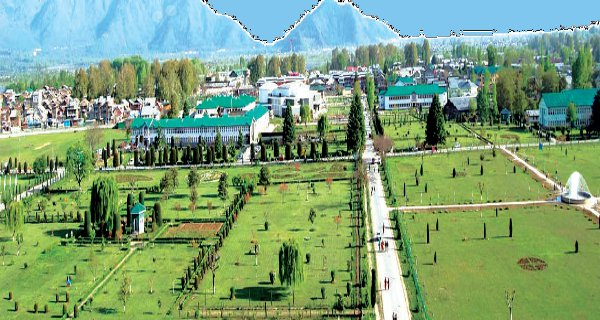
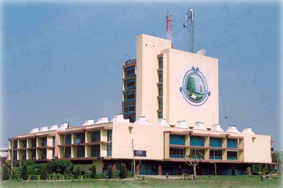
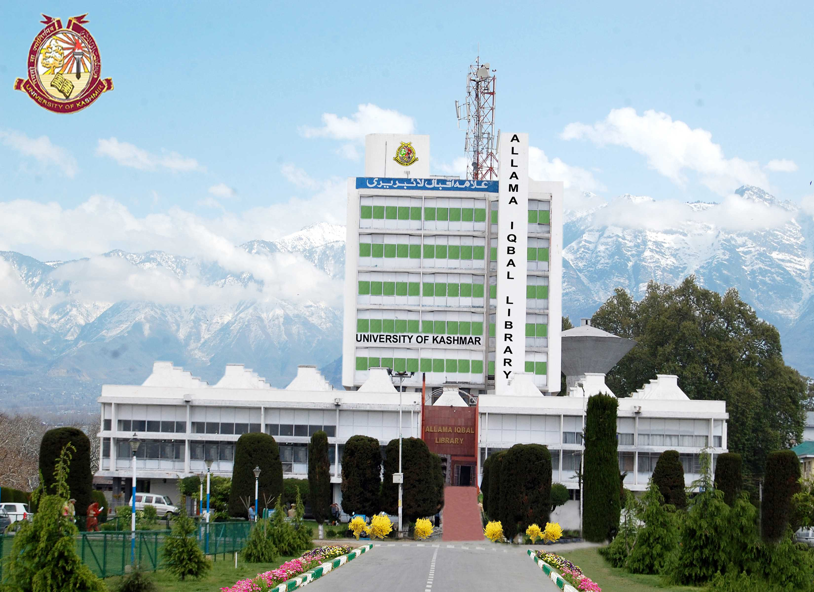
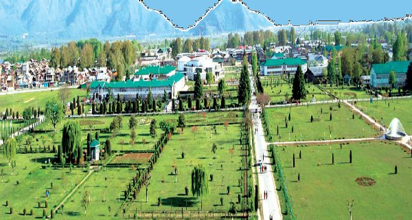
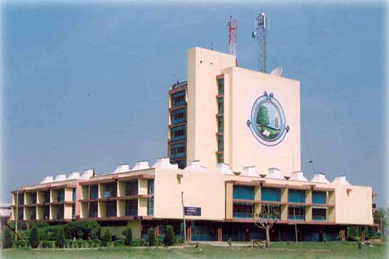
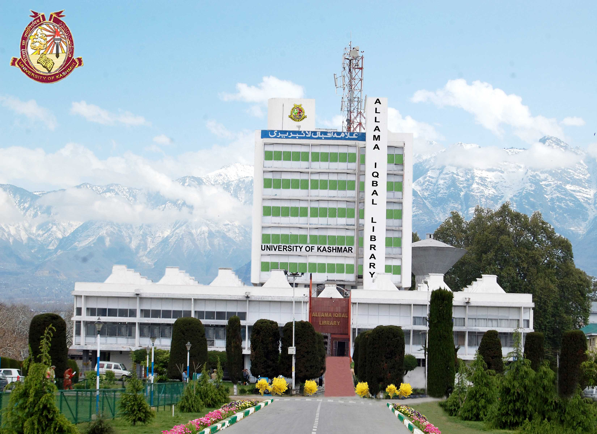

About us
The University of Jammu and Kashmir was founded in the year 1948. In the year 1969 it was bifurcated into two full-fledged Universities: University of Kashmir at Srinagar and University of Jammu at Jammu. The University of Kashmir is situated at Hazratbal in Srinagar. It is flanked by the world famous Dal Lake on its eastern side and Nigeen Lake on the western side. The Main Campus of the University spread over 247 acres of land is divided into three parts – Hazratbal Campus, Naseem Bagh Campus and Mirza Bagh Campus (serving residential purpose). Additional land has been acquired at Zakura near the main campus for further expansion of the University. The tranquil ambience of the Campus provides the right kind of atmosphere for serious study and research. Over the Years University of Kashmir has expanded substantially. It has established Satellite Campuses at Anantnag (South Campus) and Baramulla (North Campus) and three more Satellite Campuses at Kupwara, Kargil and Leh are being established to make higher education more accessible to people living in remote areas of Kashmir valley. The University has also established a Sub-Office at Jammu to cater to the needs of the candidates enrolled with the University from outside Kashmir. The University is committed to provide an intellectually stimulating environment for productive learning to enhance the educational, economic, scientific, business and cultural environment of the region. The University offers programmes in all the major faculties; Arts, Business & Management Studies, Education, Law, Applied Sciences & Technology, Biological Sciences, Physical & Material Sciences, Social Sciences, Medicine, Dentistry, Engineering, Oriental Learning and Music & Fine Arts. It has been constantly introducing innovative/ new programmes to cater to the needs and demands of the students and the society. Over the years, the University has marked towards excellence in its programmes and activities. It has been re-accredited as Grade-A University by the National Assessment & Accreditation Council (NAAC) of India in the year 2011. This is recognition and reflection of the high standard of quality in teaching and research at the University of Kashmir.